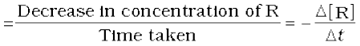
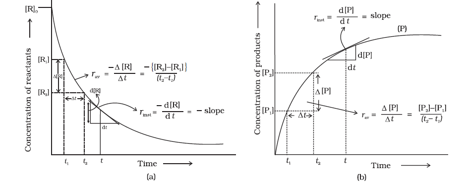
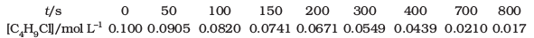
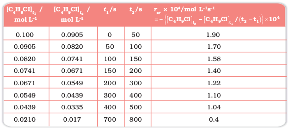
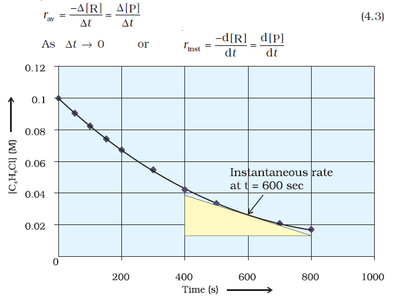
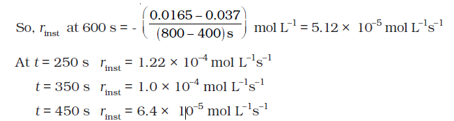
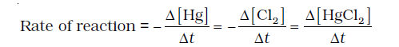
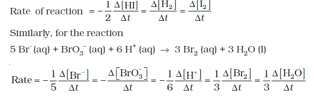
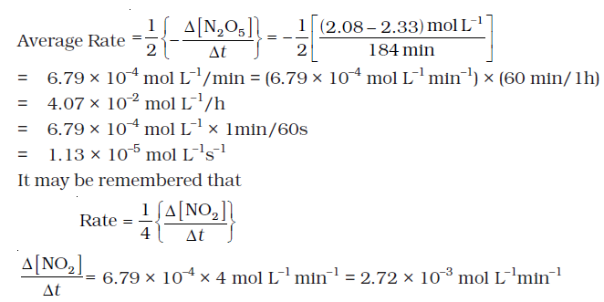

4.1 Rate of a Chemical Reaction
Some reactions such as ionic reactions occur very fast, for example, precipitation of silver chloride occurs instantaneously by mixing of aqueous solutions of silver nitrate and sodium chloride. On the other hand, some reactions are very slow, for example, rusting of iron in the presence of air and moisture. Also there are reactions like inversion of cane sugar and hydrolysis of starch, which proceed with a moderate speed. Can you think of more examples from each category?
You must be knowing that speed of an automobile is expressed in terms of change in the position or distance covered by it in a certain period of time. Similarly, the speed of a reaction or the rate of a reaction can be defined as the change in concentration of a reactant or product in unit time. To be more specific, it can be expressed in terms of:
(i) the rate of decrease in concentration of any one of the reactants, or
(ii) the rate of increase in concentration of any one of the products.
Consider a hypothetical reaction, assuming that the volume of the system remains constant.
R → P
One mole of the reactant R produces one mole of the product P. If [R]1 and [P]1 are the concentrations of R and P respectively at time t1 and [R]2 and [P]2 are their concentrations at time t2 then,
∆t = t2 – t1
∆[R] = [R]2 – [R]1
∆ [P] = [P]2 – [P]1
The square brackets in the above expressions are used to express molar concentration.
Rate of disappearance of R
 (4.1)
Rate of appearance of P
(4.2)
Since, ∆[R] is a negative quantity (as concentration of reactants is decreasing), it is multiplied with –1 to make the rate of the reaction a positive quantity.
Equations (4.1) and (4.2) given above represent the average rate of a reaction, rav.
Average rate depends upon the change in concentration of reactants or products and the time taken for that change to occur (Fig. 4.1).

Fig. 4.1: Instantaneous and average rate of a reaction
Units of rate of a reaction
From equations (4.1) and (4.2), it is clear that units of rate are concentration time–1. For example, if concentration is in mol L–1 and time is in seconds then the units will be mol L–1s–1. However, in gaseous reactions, when the concentration of gases is expressed in terms of their partial pressures, then the units of the rate equation will be atm s–1.
Example 4.1
From the concentrations of C4H9Cl (butyl chloride) at different times given below, calculate the average rate of the reaction: C4H9Cl + H2O → C4H9OH + HCl
during different intervals of time.

Solution
We can determine the difference in concentration over different intervals of time and thus determine the average rate by dividing ∆[R] by ∆t(Table 4.1).
Table 4.1: Average rates of hydrolysis of butyl chloride

It can be seen (Table 4.1) that the average rate falls from 1.90 × 0-4 mol L-1s-1 to 0.4 × 10-4 mol L-1s-1. However, average rate cannot be used to predict the rate of a reaction at a particular instant as it would be constant for the time interval for which it is calculated. So, to express the rate at a particular moment of time we determine the instantaneous rate. It is obtained when we consider the average rate at the smallest time interval say dt ( i.e. when ∆t approaches zero). Hence, mathematically for an infinitesimally small dt instantaneous rate is given by

Fig 4.2
Instantaneous rate of hydrolysis of butyl chloride(C4H99Cl)
It can be determined graphically by drawing a tangent at time t on either of the curves for concentration of R and P vs time t and calculating its slope (Fig. 4.1). So in problem 4.1, r inst at 600s for example, can be calculated by plotting concentration of butyl chloride as a function of time. A tangent is drawn that touches the curve at t = 600 s (Fig. 4.2).

Now consider a reaction
Hg(l) + Cl 2 (g) → HgCl 2(s)
Where stoichiometric coefficients of the reactants and products are same, then rate of the reaction is given as

i.e., rate of disappearance of any of the reactants is same as the rate of appearance of the products. But in the following reaction, two moles of HI decompose to produce one mole each of H2 and I 2,
2HI(g) → H2(g) + I 2(g)
For expressing the rate of such a reaction where stoichiometric coefficients of reactants or products are not equal to one, rate of disappearance of any of the reactants or the rate of appearance of products is divided by their respective stoichiometric coefficients. Since rate of consumption of HI is twice the rate of formation of H2 or I 2, to make them equal, the term ∆[HI] is divided by 2. The rate of this reaction is given by

For a gaseous reaction at constant temperature, concentration is directly proportional to the partial pressure of a species and hence, rate can also be expressed as rate of change in partial pressure of the reactant or the product.
Example 4.2
The decomposition of N2O5 in CCl 4 at 318K has been studied by monitoring the concentration of N2O5 in the solution. Initially the concentration of N2O5 is 2.33 mol L–1 and after 184 minutes, it is reduced to 2.08 mol L–1. The reaction takes place according to the equation
2 N2O5 (g)→ 4 NO2 (g) + O2 (g)
